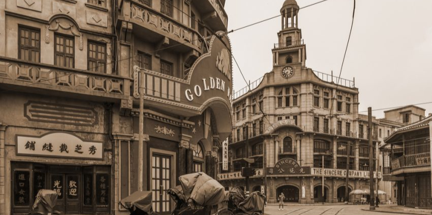
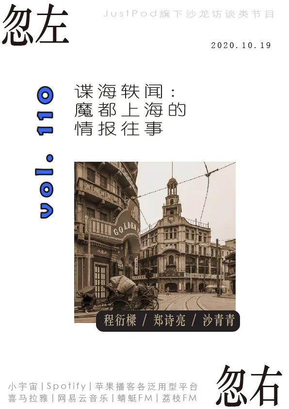

忽左忽右110 | 谍海轶闻：魔都上海的情报往事
点击蓝字关注「忽左忽右」

本节目由JustPod出品

谍海轶闻：魔都上海的情报往事
远东重镇与世界资本主义“魔都”其名程衍樑：上海开埠以来形成了华洋杂处的氛围，诞生了租界，人员流动丰富。想问一下沙老师，作为一个情报资源分享的集散地，它的重要性是从哪个年代真正迸发出来的？ 沙青青：应该是第二次鸦片战争，也就是1860年之后。因为1860年之后，上海作为远东枢纽的地位逐渐被凸显出来了。上海不仅仅是一个中国城市，也成为了远东地区的贸易、经贸、交通的中心。输往东南亚或者是日本的一些贸易，都要在上海进行中转，更不用说上海通过长江对中国内地的一些辐射了，所以说贸易繁杂，人等众多。讲到远东的一个中心，比较典型的例子就是长崎。长崎本来就是日本锁国时期的开放口岸。到了明治维新以后，日本的第一条对外固定的轮船航线就是从长崎到上海，第一条电报线也是从长崎到上海。所以说上海是联系了整个远东与世界，地位如此之重要，自然会吸引各种各样的人。 程衍樑：我上学的时候看过一部韩剧《明成皇后》，也是朝鲜近代历史上非常有争议的一个人物。后半段闵妃的残党其实就是来到了上海，设立了一个自己的情报组，获取一些清朝乃至日本和欧美的信息，传递到当时的朝鲜国内去。这也侧面佐证了刚刚沙老师的说法。 郑诗亮：其实我们也可以听听当时苏联人的意见。1920年，共产国际远东秘书处派遣了著名的维金斯基小组到中国了解情况，寻找对革命持同情意见的人。当时他们就比较了北京、广州和上海，觉得北京官僚主义严重。那个时候李大钊在北京大学当教授，他们就建立了联系。另外一个城市广州没有发达的工业，所以最后选择的上海，是当时中国最大的工业城市，而且是无产阶级中心和革命知识分子集中地。当时有一个中国代表，苏联名字叫费奥多尔，中国名字叫刘谦，他说上海是中国的社会主义者可以公开宣传的一个核心基地。那个时候举行群众集会的时候，大家会争先恐后地买，有列宁有托洛茨基肖像的文学读物、报纸杂志。可想而知，当时的苏联革命家在上海是被当做偶像一样来崇拜的，这是对革命或者对苏联的情报工作者比较有利的一面。有一本书《康生传》。康生为什么到上海来？一个原因是因为康生在青岛呆过几年，比较向往去洋派的城市。《康生传》的作者评价上海是“向每一个富有冒险精神的人招手，对康生这样一个生气勃勃的26岁的青年人来说，上海提供了各种惊人的可能性：不受约束的商业形式，精力充沛而有想象力的市民，赌博、毒品走私和卖淫的地下经济社会网络…是赌徒、骗子和冒险家的天堂，有钱人的数量可能跟小偷的数量一样多，从商业到文化，从犯罪到革命，它引诱着人们，哪怕这些人的美梦已经成了泡影，依然如此”。 程衍樑：那段时期的上海确实一个充满魔幻的时代。所以就像有日本作家村松梢风在1924年写了一本上海游记《魔都》。 沙青青：其实芥川龙之介比他更早来上海，当时村松梢风是读了芥川龙之介的上海游记之后，受到启发，他觉得上海值得一来，来了之后就有上瘾的感觉。之后一直来，每次来待的时间会更长。而且他对上海的一个描述印证了前面郑诗亮的描述。他讲上海魔都，是站在中国人民族主义的立场，他当然理解说中国人想要收回租界，表示理解和同情。但是如果你是站在一个世界公民的角度来看，全世界保留上海这样一个当时华洋杂处的环境也挺好的。在他看来这是资本主义世界最好的实验，把全世界的人塞在一起会是什么样的状况。同时在《魔都》这本书里面，他当时还有一段话，意思是说上海是资本主义社会的隐喻，代表着资本主义社会发展的方向，全世界都会更像上海。我们一直说上海是冒险家的乐园，实际上上海Shanghai在英语里面，除了是个地名之外，它同时还是个动词，Shanghai(verb)。Shanghaied（被上海）是什么意思？其实它指的是19世纪的时候一种对水手的诱拐和绑架。上海当时是远东最重要的商贸中心，会有很多货船会在上海卸货上货，就会缺水手。缺水手怎么办呢？如果正规的招聘招不来，他就会绑人丢到船上去，反正开到大洋里面你也不得不为我做事。所以当时这种行为就被称之为Shanghai。 租界犯罪印象与实际区划程衍樑：在第二次鸦片战争之后，中国的鸦片进口贸易合法化了。但是在19世纪末的时候，其实它的市场是在不断萎缩的。因为当时中国云南这些地方的国产烟土在自然增长。人们常说法租界是上海鸦片贸易的策源地，但其实在1924年之前，在上海，鸦片经营的中心是在公共租界的。但是随着1924年江浙战争爆发、卢永祥垮台，公共租界进行了一次这种彻底的禁烟活动，之后的鸦片贸易的中心才转移到法租界里面去了，也就是我们后来认知里的法租界。 沙青青：主要是要看区域，基本上靠近法租界的西部边界，往静安寺那个方向，那一块是属于租界的三不管地区。一方面它是租界管辖的边缘，又是华界管辖的边缘，然后当时又牵扯到越界筑路，各方面交织的这样一个地方。如果你翻过30年代40年代一些老报纸的话，经常能看到法租界的西部边界，就是现在的华山路这里，经常会发生这种半夜谋杀。但很有意思的是，是华界警方和租界的巡捕房在统计的时候，又互相甩锅了，把犯罪算在对方区域的头上。其实租界的区域划分，公共租界就是现在的黄浦区，人民广场这片。它的边界可以从现在的外滩一直延伸到静安寺，贯穿整个南京东路、南京西路，然后当中这一大片都是属于公共租界的。之前看电影《八佰》，那个片子里面歌舞升平，隔一条苏州河，就是公共租界了。还有一块是法租界，是现在徐汇的北部。因为徐汇是个比较大的区，从人民广场的边界一直延伸到现在的徐家汇，是属于法租界。如果你把老的卢湾区算进去的话，也包括整个卢湾和徐汇的北面这一部分。它的东部边界是到肇嘉浜路，然后它的西部边界是静安寺。这个区域是法租界的区域。你现在去徐家汇的话，它看起来也算是一个城市核心区。但是在上海的话，其实直到改革开放初期，徐家汇都是上海市区的边缘。大家如果以后来上海的话，可以观察一个现象，沿着现在上海的华山路走，华山路的东面全部是洋房，西面全是新房。为什么会如此？它就是一条把租界跟华界的一条分界线。因为法租界的关系，所以有很多历史建筑洋房小别墅。 郑诗亮：20年代的时候，我党就已经很懂得利用公共租界。当时因为康生在上海，有很多信仰共产主义的学生就一起起来反抗，把学校的控制权夺下来了。我党就把大学从闸北的郊区迁到了公共租界，然后在里面的花园洋房上课。包括当时的学生也好，康生也好，就住在洋房附近的小巷子里。为什么呢？环境好是一个原因，主要还是自由。因为搞革命是很危险的事情，但是不管怎么弄，各方势力都是不敢进入租界的，租界是一个很好的保护，用《康生传》作者的说法叫做，“大海中的自由孤岛”，不仅庇护了这些帮派分子，也庇护了革命者，也庇护了像鲁迅这样的一些作家们、评论家们。 地下工作的复杂人际关系程衍樑：前几年拍过一个德剧，在Netflix上，《巴比伦柏林》，是评价非常高的一部剧。我在豆瓣上看到过一个评价，这位豆友是怎么评论的？他说：“1929年的上海比起柏林一点都不逊色：总书记向忠发还藏在上海发号施令，一边鼓动城市工人罢工，一边向农村根据地送去干部。列宁主义左翼反对派依托租界开始活动，出版了他们的第一本杂志。苏联红军的情报小组是它们的邻居，正在竭力恢复对华情报网。佐尔格正在准备启程来沪，杨虎是华界白天的王，杜月笙是租界夜皇帝，特科和中统互相猎杀，复兴社的分子在帮会中慢慢发展势力，盯着各路实力派的驻沪代表，后者正在筹划一场战争，第二年蔓延半个中国的中原大战。”我觉得这段话还是蛮有意思的，里面提到的这些话题，每个议题都可以作为谍海轶闻系列的话题。 郑诗亮：有一本书叫《巨人传》是人民文学出版社出的，最早的一本是1956年出版的。其中一个译本的翻译家叫鲍文蔚，鲍当时就是特科的。他跟向忠发这个事情是很有关系的，因为他30年代的时候，他是作为特科的外围情报工作者，对当时的顾顺章事件都起到了很关键的作用。比如说当时获取向忠发的证词，鲍文蔚就在当中发挥了作用。他的女儿有过一个回忆录，从中你会发现那个时候上海的地下工作可以说是三教九流，都参与到这过程当中来。其实那个时候租界的一些人也会有意识的利用帮派分子来维护秩序，这样一来就帮派分子就往往会成为各方势力的座上宾。套用社会学家格兰诺维特的话说，这些强关系弱关系需要人来维持。电影《罗曼蒂克消亡史》里面，葛优演的帮派分子就把一个人活埋了，他其实是有历史原型的。当时青帮有个地下党员，因为国民党发起了清剿运动，当时杜月笙奉命就把党员活埋了。国共谈崩对上海也影响很多。大家可以回忆一下葛优电影里演的大佬，就说上海还是要讲秩序，他说代表工人的利益可以谈，但是你们不能把上海的秩序规矩给坏了。黑帮分子的满口秩序，这也是上海特色的黑帮分子，确实还是蛮讽刺的，但是某种程度上也道出了上海的实情。张爱玲不是有篇很著名的文章，标题尤其著名，叫《到底是上海人》。当时里面有个结论说上海人虽然公认的坏。我觉得其实就是我们传统很难容纳和理解的精明，或者说市侩，有分寸也有底线，在维护上海秩序的一个默契和共识之下来展开各种活动。 沙青青：当时就有所谓的红色工会和黄色工会，那么黄色工会就是指的是更依附于传统同乡会或者帮会力量的工会。 程衍樑：因为帮会本身就是码头文化的一种。在一个没有工会的年代，那就是靠帮会或者一些同乡的角色来维护自己的利益。时至今日，在西方这种工会比较有实质性作用的地方，工会的重要成员还是跟黑帮跟这种地下的秘密组织有千丝万缕的联系。《爱尔兰人》嘛。 郑诗亮：国共闹翻之后，像康生这种人直接在上海隐姓埋名。康生是怎么样隐藏自己的身份的？第一个，他结婚了。我党早期的很多高级领导人，都是跟年轻的女党员同住作为掩护的，所以《潜伏》里面，宋红雷和姚晨演的夫妻是有历史真实性的，因为他是要摆脱怀疑，不然太惹眼了。第二个是康生利用了虞洽卿，作为虞的私人秘书，康生写的一手好字。康生的书法现在在拍场上不得了，字确实写得好，号称是我党第一大书法家。虞洽卿当时跟朋友的应酬，生意上的往来，写什么请帖、拜帖、贺信、挽联都是让康生来写，康生就利用这个身份就在上海就潜伏下来了。所以那个时候就康生过的是一种双重生活。外界都知道他是在帮上海的大资本家做事儿，已婚，然后住在法租界，你看是不是很体面？其实他是地下党员，利用秘书的身份做掩护。康生是个工作狂，工作能力极强。后来他到晚年的时候，当年在上海的时候就得了脑病，就一闭眼就听到脑子里面哗啦就像大河流水一样，就是靠写字把这个病治好，强行修身养性，意志力惊人，非常厉害。 共产国际与我情报机构如何恢复地下工作 *程衍樑：*其实30年代，我党从明面上转入了地下，包括在整个的组织结构都受到了严重的一个破坏，跟共产国际的联系也断了。其实从苏联的角度上来说，它是非常有必要重新建设乃至去铺一些更加隐蔽的这种通信渠道。很多时候就依靠思想左倾的记者们、演艺明星、作家们来传达信息，像佐尔格同志，包括像尾崎秀实，像牛兰夫妇。我看过一份材料，牛兰为了身份信息的隐蔽性，在上海拥有7处住所，8个信箱，十几个银行账号，也有数不清的化名，但即使这样还是在31年被捕了。他是在公共租界被捕的，被转移到了国民政府手上。因为其实当时是有一个反共的情报网的，英国的邵氏部门，跟法国、荷兰、德国之间也会传递一些关于著名红色分子的一些行踪的消息，然后会进行分享。
沙青青：中国在30年代初的时间点上有一个很重要的问题：经过了20年代末，比如说军阀清缴，实际上当时苏联在中国的整个情报体系是有一个土崩瓦解的状态。因为20年代末的时候，经过这一轮打击，直接导致苏联在中国的情报系统等于是被清空了一遍。到了二三十年代初等于是要进入一个重启阶段。还有一个原因就是，这次清空有个直接后果是什么？苏联因此出现了误判。比如说918的爆发，苏联采取了不干预的政策，因为当时苏联在中国满洲地区的情报机构，没有判断对性质。918事件发生之后，斯大林同志自己在索契度假，莫斯科群龙无首。苏联中央知道这个事情之后，赶紧发电报给在索契度假的斯大林同志说这个事情应该怎么处理？斯大林同志说这个事情肯定是日本人获得了西方列强的谅解才敢这样做，因为苏联信息网络被破坏，他根本不知道这是一个关东军下克上的暴走行为。所以这也解释了为什么他非常急迫的说一定要把牛兰拯救出来，后面才有了王牌间谍左尔格同志来到上海。 郑诗亮：我党的情报机构也被破坏得蛮厉害的，20年代末被打击得非常惨。除开大家都知道的向忠发、顾顺章，还有一些相对来说没有那么有名但非常重要的人，有一个叫白鑫。1929年的8月24号，中央军事委员会正在租界开会，在新闸路那边，然后警察突然闯进去，把所有的参会的人员都逮捕了，有彭湃，当时的中央政治局委员，而且是江苏省委的军事部长，还有当时的军事部长，中央政治局候补委员杨殷，还有军事部的秘书白鑫。因为非常偶然的一个原因，周恩来没有出席在当天的会议当中，很快这些所有被逮捕的中国领导人就被杀害了。当时因为彭湃的死，周恩来还写了一个呼吁书。后来是陈赓搞清楚了，他就利用在国民党的情报机关里面有一个自己人叫杨登瀛，杨登瀛就是在日本留学的时候，然后接触到马克思主义，变成了进步人士。他回国之后，是在陈赓指挥的一个国民党的特种部队的分队里面工作。国共合作破裂之后，杨登瀛留下来了，是一个上海的特派员，国民党特工的各种情报在上海都要经他的手。然后陈赓就通过他来打听，当天为什么会出现这样的事情，这么重要的会应该是很隐蔽的？结果就发现当天开会的有个人叛变了，就像狼人杀一样，里面有一匹狼，那个狼是谁呢？是白鑫。白鑫把这个秘密接头的地点供出来了，因为当天去执行搜捕行动叫范静波，是白鑫的同乡。其实白鑫资历还蛮老的，他是黄埔一期在叶挺手下是做过党代表的，然后还参加过彭湃领导的海陆丰运动。老革命结果就叛变了，后来被中央特科锄奸了。 我情报机构与国民党谍报机构的建设异同郑诗亮：到20年代中期，党员数量锐减。到1927年年底11月，党员的人数从6万人直接减少到1万人。28年的时候在莫斯科召开了六大，为什么要在莫斯科召开？因为时候中国就没有一个地方是安全的。周恩来当时就起到了非常重要的作用，而且当时周恩来是怎么去到莫斯科的？他是装作一个古董商，途经大连、长春、吉林、哈尔滨，然后再辗转前往莫斯科的，可想而知当时我党在国内的这种生存有多么艰难，到处都是围追堵截。那么中央特科有4个科，第一个科是它的总部，由周恩来来直接指挥。周恩来有个著名的一个化名，伍豪，到了文革晚期的时候还被翻出来，作为他的生涯污点来试图打击他。第二科是负责收集情报，由陈赓来领导，因为陈赓的人脉很广。第二科由谁来负责选拔？是由李克农、钱壮飞，这些人物在顾顺章叛变事件和向忠发事件里面发挥作用。第三科负责锄奸，那么他的负责人是顾顺章。第四科是负责传递情报，传递情报最重要的是什么？是要通过无线电来通讯，那么他的领导人叫吴铁铮，也就是吴德峰。吴这方面的作用非常重要，因为如果没有他在，中央几乎没有办法跟共产国际展开联系，因为当时无线电是最安全最可靠，也是最广泛应用的一种通讯手段。 程衍樑：刚刚郑诗亮提到了特科的起源，那么我们来谈谈对立面。因为31年之后，蒋介石确立了自己最高领袖的地位，对于一个特务掌控这一块，其实聚拢了很多人，尤其像戴笠其实是整个大革命期间逐渐向蒋靠拢，当然他们本身都是浙江人。国民党的情报组织是如何壮大的？ 沙青青：国民党的情报组织其实江湖气更重，你也提到了，戴笠跟蒋介石都是一样，都是浙江人，基本上还是以地缘为核心去选择自己的核心成员，然后是培养自己的羽翼。其实国民党到现在台湾都没有解决到自己党的核心意识形态是什么。作为一个政党或者战斗集体，尤其是一个在现代社会的战斗集体，必须要有一个很核心清晰的意识形态的。国民党从蒋介石开始，自我定位一直非常模糊。一个政党，是个左派政党还是个右派政党，自己有定位的话。谁是你的敌人，谁是你的朋友？国民党一直糊涂。 程衍樑：这个话题其实在魏斐德那本《间谍王》里面也有涉猎，他认为蒋作为一个靠着军事力量跻身最高领袖的军人，他对于党的力量始终既是一个既用也防的心态，这某种程度上阻碍了国民党基层建设的加强。 郑诗亮：打个比方来说，就好比你现在一个企业你要去发展县城农村小镇里面的用户，要有人帮你做地推。你现在内部斗争，把那些做地推的人都干掉了？有点像淘宝和拼多多之争对不对？相当于你把你内部的这帮拼多多的人都干掉了，结果发现没人帮你去搞农村包围城市，没有人帮你发展最基层的用户，这道理是一样的。 沙青青：后来1937年就是抗战爆发之后，其实在西方国家介入战争之前，很长一段时间，苏联是唯一一个支援中国抗战的大国。有一个方式就是跟国民政府搞过一些情报合作和情报培训，比如说它曾经派自己的一些情报机构的人员，来对国民党的情报人员进行技术培训，比如说密码破译。40年代以后，美国人介入战争之后，后面的中美合作所已经在重庆进行新一轮的技术升级。在美国人之前还是要靠苏联老大哥的，不管是我党还是国民党。 “散装日本”与在华日本左翼沙青青：其实日本人对中国的一些情报渗透做得非常早。甲午之前，就黑龙会这种机构其实非常多，这批就是成员比较复杂，有一批人可能真是怀着意识形态上的一些理想主义，要兴亚，要搞亚细亚主义。但另外一方面，他确实是在为日本的一些国家机构服务。上海又是日本在中国利益最多的地方，除了它有大量的侨民，经济利益在上海也特别多。上海当时应该是日本侨民数量仅次于满洲的地区，将近10万人挤在虹口。但是请注意，虹口不是日本租界。 郑诗亮：反正当时日本在上海的势力可以分成三块：第一块就是属于军方的间谍机关；第二块就属于政府的外务省的；第三块就是民间的。民间的右翼团体，就是像黑龙会类似这种机构。还有一批人可能跟日本国内的各种各样政治势力都有勾连。比如说原来的同盟通信社驻上海的副支局长松本重治，是近卫文麿的高参。他自己第一身份是一个新闻人，但第二身份就是近卫势力在上海的一个眼线，会传递信息回日本。他那本《上海时代》蛮好看的，但现在孔网上已经几百块钱一本了。 沙青青：日本的这些机构，体现了“散装日本”的特点：各个系统之间的信息往往是不通的，甚至还要互相彼此试探对方的情况。而且还有一个问题，当时上海日侨特别多，内部也分左中右。只要有人，就分左中右，也有很多的日本左派人士逃到上海，最典型的例子就是鲁迅同志的好战友是内山完造。他的内山书店其实出版中国左派作家的一些作品，也会传递一些有社会主义倾向的一些作品。当时日本驻上海的总领馆会坚持去看书店的书目，最近上什么书，也从中窥见很多信息，通通把你的小黑帐抄下来。内山书店甚至店内会出售很多在日本国内，可能都已经很难找到了的一些左翼理论书籍。所以其实从这个角度上来说，为什么说鲁迅可能跟日本的关系那么好，其实在日本人里面有大量的这些左翼分子。像满铁调查部里面有大量的在日本国内受排挤的左翼学者们，被发配到了满洲，他们从事一些跟学术考察方面的工作，跑到满州和上海来，拿着马克思的理论工具帮日本中国政府做田野考察。 程衍樑：草柳大藏那本《满铁调查部内幕》，序言里面其实就讲到日本人对于满洲的一个情怀就是“火红的夕阳”。日本的侨民会问妈妈，为什么日本的太阳这么小？里面还提到过一个很好玩的故事：满铁调查部上海支部1942年的时候，一个叫山崎的部员在离开的时候，上海的南京楼里面它的部友们给他办一个欢送宴会，期间大家越喝越多，突然就唱起了国际歌。我就立刻想到《锅匠，裁缝，士兵，间谍》里面唱苏联国歌那一幕。 郑诗亮：满铁调查部一方面它的影响今天还在继续，很多关于中国的社科研究所依仗的基本材料，还是来自于当时满铁非常严谨和全面的资料。因为它这是带有军事目的的，要给日本做出军事决策，政治决策提供一个最严谨的参考。另一方面，其实我们对满铁的认识，真假参半，有很多浪漫化的倾向。比如说有一篇论文叫《佐尔格尾崎事件的叙述与档案》，把50年代的很多日文文献找出来去研究。我和沙老师共同的朋友就是汪力，他的博士论文就是做《尾崎秀实与中日战争时代的东亚》，我可以把里面有一段摘出来：“尾崎秀实其实是很独特的，他是跨越了帝国和反帝国的界限，第一个是朝日新闻的记者，还做过近卫文磨的内阁智囊，此外还做过满铁的顾问，以他精力充沛的言论和活动参与到了帝国日本的建构之中。另外，他又是首屈一指的中国问题评论家，而且始终是中国的民族主义和社会革命的同情者，还是一个秘密的共产主义者和情报员，参与了以苏联间谍佐尔格为核心的情报小组，以其广泛的人际关系搜集大量的重要情报提供给苏联。”你很难用转向或非转向来评价他。你说他转向了，有他的信仰，有他的坚持，包括他一直在提供各种情报来反法西斯。你说他非转向，其实他是对天皇制度是非常同情的，他是希望把天皇制度和社会主义结合起来，就让我们想到了人民的天皇。日本人对天皇的这种迷之眷恋和社会主义有点缝合怪了。最后一个还是蛮重要的，尾崎我觉得可以代表一批当时同情中国、同情革命、支持苏联、反对日本法西斯主义的满铁的人，或者说是秘密共产主义者。尾崎秀实是跨越了近代日本理性主义精神的代表，就是跨越了马克思主义，也跨越了充满感情的亚细亚主义的界限。有一批人对社会结构的分析非常理性，分析中国社会是半殖民地半封建社会，然后推导出中国一定要进行一场革命，来摆脱这种结构，对吧？这是非常理性的，对中国的一种同情。还有一批非常感性的人，觉得大家都是亚洲人，我们要反对英美鬼畜，要把殖民者赶出去，是非常感性的亚细亚主义。 以上海谍影为背景的大众文化作品谈沙青青：《色戒》，就是李安的那一部，对上海那个年代氛围的塑造是非常成功，对于汪伪内部跟日本这种微妙的感觉塑造的特别好。比方说，梁朝伟演的易先生不是一个简单的汉奸。而且当中他有一条辅线，片子一开始，双方人都在追一批军火，当时秘书就在问他说就是抓了一个奸细，一个重庆方面的人就问他那批军火到哪去了。然后电影里面汤唯扮演的（原型）郑苹如，她后来也在跟上级汇报工作的时候也说，虽然易先生杀了我全家，但是我还是可以跟他面对面，坐在一起喝酒吃饭聊天。所以说易先生这个角色本身其实绝对不是你想象中一个单纯的汉奸，他跟重庆之间其实或隐或暗，都是有一些秘密的这种关联在的，他跟日本人的关系也是一种既团结又斗争的关系。 郑诗亮：最近出版了一个张爱玲晚年和他的最好的朋友宋淇和邝文美夫妇通信的一个书信集，然后里面披露蛮有意思的。张爱玲跟宋淇聊就是聊《色戒》，就讲说《色戒》小说的原型是宋琪提供给张爱玲的，说原型是他在燕京大学的几个同学。所以说明《色戒》的小说不是说像我们现在猜想的那样，是讲郑苹如和丁默邨。但是从电影所引发的大众讨论来看，大家都把这个事情锁定在郑苹如和丁默邨，是因为这个事情当时非常出名。《色戒》刚刚上映的时候，有很多左翼的知识分子，他们直接起来抵制，说是对爱国烈士的一个污蔑，因为郑平如是非常厉害的奇女子。她这个人是官二代，又长得很美，学识又好，谈吐又好，她当时把近卫文磨的儿子近卫文隆这迷得不要的，属于胆子很大的女中豪杰。你不是这样的人，其实也是接近不了丁默邨的。丁是郑苹如当年读书的时候的中学校长，他们是有师生一层的关系的。 郑诗亮：从各个角度来看，郑苹如都是值得崇拜的，不管是家事、能力、才华、样貌，还是这种勇敢程度，以及传奇程度，可惜功亏一篑。她父亲当时是国民党在上海的一个大法官，因为这个事情就受到了很大的牵连，也受到很大的折磨。他们满门忠烈，郑苹如还有一个哥哥，后来在抗战的时候是空军飞行员，也牺牲了，这一家子非常了不起。 *程衍樑：其实《色戒》本身的故事，张爱玲的小说跟郑苹如的故事本身其实已经有一个很大的区隔，日本漫画家村上纪香的作品《龙long》我很推荐，作为一个谍海轶闻系列听众真的可以去读一读。当然你可以也说它是个爽文，它串联了对东亚这几个国家近代史上的历史人物和时刻，比如说主角押小路龙，他的父亲是叫押小路琢磨，是被刺杀掉的财阀，有没有三井财团总裁团琢磨的影子？这个漫画它对于历史爱好者，是一道非常开心的大餐。我们可以在里面看到落日下的紫禁城，看到飞机中的溥仪，看到二·二六事变当天东京大雪街头暴走的部队。循着历史这个tag找过来看漫画的人一定都会被感动。他对于新京的描绘，我们今天的长春，对历史的还原，乃至于在描述上海当年的龙蛇混杂，以及各方势力勾心斗角，情报工作者的氛围，都很到位。作为一个漫画家来说，我觉得他这方面做得真的是很到位非常到位。 沙青青：有日剧的，但日剧我印象中只拍了一季，后面就没有接着拍下去。 郑诗亮：包括我前面和沙老师聊过一个小说改编的动画，《代号D机关》，对当时作为魔都的上海描述也是很精彩的。我印象最深的是里面有一处，情报人员接头，就是在大世界舞厅里面，非常有当时的上海的魔都风情。上海所谓的魔都就是歌厅多，舞厅多，然后妓院多，这种声色犬马、灯红酒绿的地方，而且这个故事的爆发也是因为一起自导自演的杀人事件也是在租界里面有个谋杀。 沙青青：然后日本宪兵要根据巡捕房之间的关系按图索骥。 程衍樑：最近几年不是也出了中文版法兰奇的《午夜北平》吗？其实讲的就是在七七事变前当时前英国驻华领事女儿在北京的帕梅拉案，在张北海的《侠隐》里也有，后来姜文拍《邪不压正》也提了。 沙青青：保罗·法兰奇已经出了一个讲上海的“日本侵华时期的上海地下世界”，正标题叫《恶魔之城》，写到上海词儿都很神秘，这个魅力不是一般人可以消受得起的，需要各种各样的势力都掺在一块。 程衍樑：魏斐德写过《上海歹土》，基本上还是以1937年之后的上海，这段时间的中日的勾心斗角以及情报站，为主要的脉络。其实37年以后上海确实变成了非常在一段时期内变成一个非常血腥的，非常多互相猎杀除奸活动的歹土。当时确实也有许多一些误伤的事情，就是你不走，那卧底是不是你？不管，先把你干掉再说。唐绍仪当年当过民国的总理，这级别非常高的人也被暗杀。还有李国杰也是在上海被刺杀的。那时李国杰已经在上海定居了很久了，李氏家族整个都已经在上海已经深根下来了。李国杰是李经迈的儿子，李鸿章的长孙。李鸿章死的时候由李国杰来继承了他的侯爵爵位，但更关键的在于，李国杰本人在二十年代掌握了中国近代史上油水最丰厚的一个官营企业，就是轮船招商局。 当然某种程度上你说这种对财政权的一个抢夺是不是也是最终，蒋的中央政府要干掉他的原因，我们不知道，但至少李国杰被暗杀的时候应该还是很懵的，他说了一句“为什么是我？” 沙青青：Why me! |||END|||*

节目后期：hotair | 制作总监：王若弛
文字整理：hualun | 排版：得闻

苹果播客 | Spotify | 小宇宙App | 网易云音乐喜马拉雅 | 蜻蜓 FM | 荔枝 FM央广云听 | 芒果动听 | 阿基米德 | 三联中读搜索『忽左忽右』订阅收听